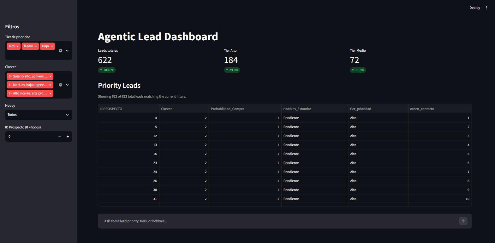
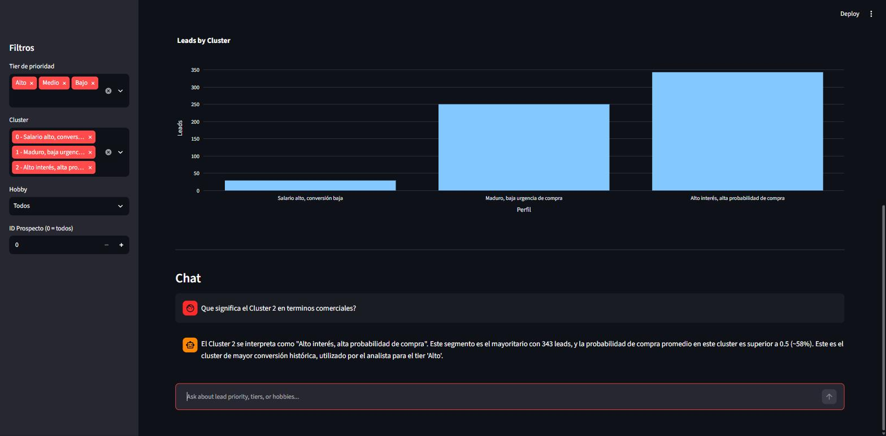
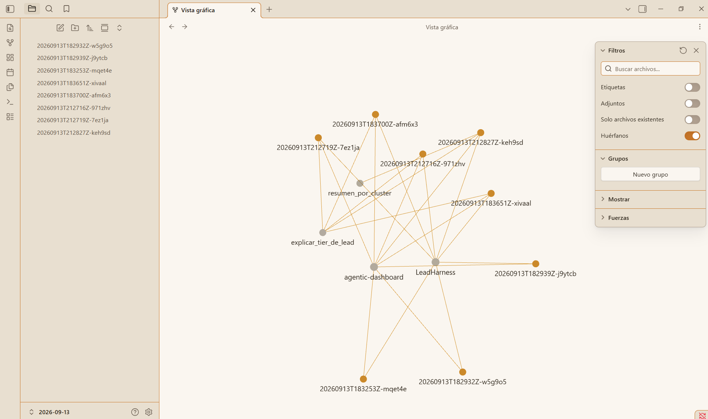
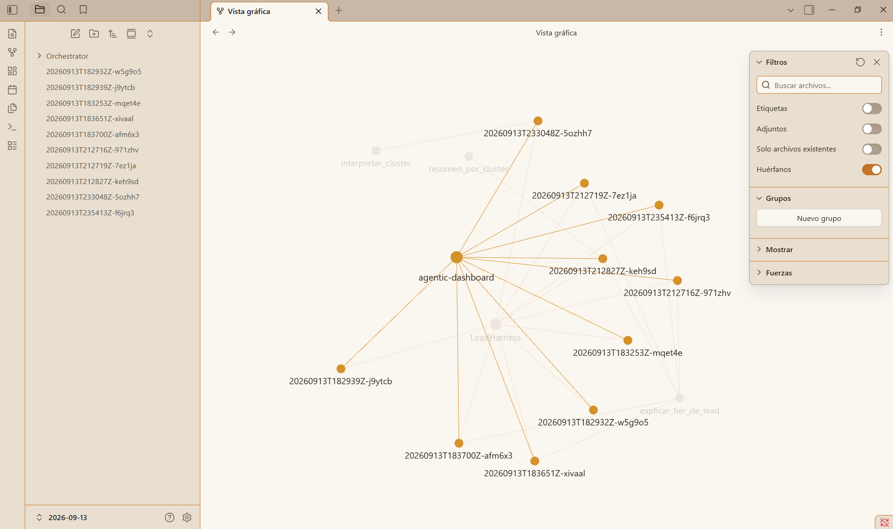

Continuación de Módulo 4:
acá el pipeline de K-Means y Random Forest ya construido se reparte entre tres roles — data
engineer, data analyst, data scientist — con specs propios, un handoff explícito entre ellos,
y un desacuerdo real que queda documentado en vez de resuelto en silencio. Lo construimos con
Spec-Driven Development, de punta a punta, y la verificación encontró un error real antes de
publicarlo.
El capítulo original no ship-ea un dashboard funcionando — ship-ea los specs, el
dataset y un protocolo probado (RUNBOOK.md) para que
vos (o un code agent en VS Code) construyas el dashboard vos mismo. Ver también
EXERCISE.md.
Lo que sí viene construido y mergeado es la extensión
agéntica de más abajo — una capa distinta, agregada después sobre esa misma base.
¿Por dónde empezás?
Este capítulo sirve dos lecturas distintas. Elegí la tuya — podés cambiar en cualquier
momento, la otra sigue un scroll más abajo.
El pipeline de Módulo 4 ya sabe segmentar prospectos y predecir probabilidad de compra —
pero un modelo entrenado no es lo mismo que una decisión comercial tomada. Este capítulo
simula cómo un equipo real reparte ese trabajo: alguien prepara los datos, alguien define
las reglas de negocio, alguien interpreta el modelo para el usuario final — un líder
comercial priorizando a quién llamar primero.
Audiencia
Líder comercial
Decide a quién contactar primero, según cluster + probabilidad de compra — la misma señal que ya calcula Módulo 4.
Estructura
Handoff lineal
Engineer → Analyst → Scientist. Cada uno entrega al siguiente por contrato explícito, no por convención tácita.
Honestidad
Un desacuerdo real
No todo cierra prolijo: un dataset no tiene clave de unión, y eso queda documentado como decisión, no escondido.
Los 3 roles
Cada uno es un archivo markdown con seis secciones fijas (problema de negocio, inputs/outputs
que posee, reglas de negocio, contrato de entrega al siguiente rol, límites de alcance,
evidencia de aceptación) — pensados para que un code agent los ejecute de punta a punta.
1
Data Engineer
Anonimiza y proyecta dos diccionarios de negocio (hobbies, categorías de comentarios) en tablas públicas, reutilizando la data ya publicada de Módulo 4. Entrega tbl_leads, dim_hobby, dim_comentario — y deja abierta la pregunta: ¿está bien que una de esas tablas no tenga clave de unión?
2
Data Analyst
Define la lógica de priorización comercial (tier_prioridad, orden de contacto) sobre esos datos. Es testigo del desacuerdo del ingeniero — su caso de uso funciona igual sin la clave faltante — pero no lo resuelve por su cuenta.
3
Data Scientist
Interpreta Cluster y Probabilidad_Compra para la superficie de decisión final, y cierra el desacuerdo: exige clave de unión estable para cualquier feature de modelo — la tabla que no la tiene queda como vocabulario, no como feature.
Cómo correrlo con tu Agent Code
No es "abrí un IDE y pedile un dashboard". Es un protocolo con checkpoints: tu agente lee
un rol, hace su parte, te muestra evidencia real (no lo que el spec dice que debería
pasar — lo que efectivamente encontró), y recién ahí avanza al siguiente. Todo está en
RUNBOOK.md.
0
Contexto
El agente lee EXERCISE.md, docs/contratos-datos.md y docs/negociacion.md, y te resume el caso de negocio con sus propias palabras — no copiando el texto.
1-3
Los 3 roles, en orden
Engineer (verifica que el dataset existe), Analyst (escribe tier_prioridad y orden_contacto en código real, contra filas reales), Scientist (interpreta Cluster y Probabilidad_Compra en etiquetas legibles). Cada paso tiene un checkpoint: no avanza sin mostrar evidencia.
4-5
Dashboard y autovalidación
Construye app.py en Streamlit + Plotly, lo corre de verdad, y confirma que las mismas filas de prueba del paso 2 dan el mismo resultado en el dashboard. Si no coincide, el propio protocolo le dice que hay un bug, no que lo ignore.
Validado de verdad, no solo escrito
Corrimos este protocolo con un agente sin ningún contexto previo del proyecto —
simulando exactamente a un alumno. Completó las 6 fases, arrancó un Streamlit real
(/_stcore/health → ok, HTTP 200) y encontró 5 huecos reales en el
protocolo que ya corregimos: qué cluster es "de mayor conversión" no venía dado (hay
que perfilarlo), faltaba el umbral para separar Medio de Bajo, y una regla de
desempate ambigua en el spec del analista. La solución que generó esa corrida queda
como referencia en reference-solution/
— marcada como spoiler, para destrabarse, no para copiar primero.
Extensión: Dashboard Agéntico
Todo lo de arriba es el ejercicio original: vos construís reference-solution/app.py
con tu code agent, siguiendo el RUNBOOK. Esto de acá es una capa nueva, agregada
después, sobre esa misma base — un agente de IA de verdad (no el code agent que te
ayuda a programar: un agente que corre dentro del dashboard y responde
preguntas de negocio) envuelto en specs, guardrails y trazabilidad. Vive en
agentic-dashboard/,
y a diferencia del capítulo original, esta parte sí viene construida y
mergeada — no es un ejercicio para que hagas vos.
Specs
Contratos, no vibes
Cada skill tiene un schema Pydantic — el modelo no puede improvisar qué parámetros manda.
Skills
6 funciones puras, registro cerrado
La lógica de negocio (tiers, umbrales, interpretación de cluster) vive acá, reimplementada — nunca importada — desde reference-solution/.
Harness
Razonar → elegir skill → ejecutar → reintentar
OpenRouter u Ollama, intercambiables por variable de entorno — nunca elegibles desde la UI.
Observabilidad
Cada corrida, una nota en Obsidian
Trazas en Markdown con wikilinks — el Graph View arma solo la topología Orchestrator → Agent → Skill.
Cómo corre una pregunta, paso a paso
Nada de esto es una caja negra. Cada pregunta al chat pasa por los mismos 5 pasos,
siempre en el mismo orden:
1
Reason
El harness arma la conversación y se la manda al modelo junto con TOOLS_SCHEMA — la lista de las 6 skills disponibles, cada una con su schema Pydantic. El modelo no ve el código, solo el contrato.
2
Select
El modelo devuelve una tool_call. El harness la busca en el registro cerrado — si no existe, o si el nombre/argumentos huelen a algo prohibido (ej. unir dim_comentario a un lead), la rechaza ahí mismo, sin ejecutar nada.
3
Execute
La skill corre aislada contra data/db_dashboard_course.db. Nunca recalcula un umbral ni un cluster — esos ya vienen del pipeline de Módulo 4. Solo lee y ordena.
4
Observe / Retry
El resultado vuelve al modelo. Si algo falló, el harness reintenta — pero no siempre igual: argumentos inválidos reintentan 2 veces, un timeout de red reintenta con backoff, y una skill inexistente que suena a intento de saltarse un guardrail no reintenta nunca, se corta ahí.
5
Answer
Antes de mostrarse, la respuesta final pasa por el guardrail estructural: si combina un IDPROSPECTO real con una categoría de comentario real — en cualquier parte de la respuesta, no solo cerca — se descarta entera y se reemplaza por un rechazo explícito.
Así se ve un schema de skill
Lo que el modelo recibe para poder llamar explicar_tier_de_lead — nada de esto lo escribe el modelo, lo genera Pydantic a partir del código real:
{
"type": "function",
"function": {
"name": "explicar_tier_de_lead",
"description": "Explain the priority tier assigned to a single lead by IDPROSPECTO.",
"parameters": {
"properties": {
"idprospecto": {"title": "Idprospecto", "type": "integer"}
},
"required": ["idprospecto"],
"type": "object"
}
}
}
El dashboard, funcionando

El panel fijo — KPIs, filtros y tabla, sin preguntarle nada al agente.

El chat, respondiendo con datos reales de la skill interpretar_cluster.
El dashboard prevalece — el chat es un agregado, no un reemplazo
La primera versión de esta extensión era solo un chat: tablas y gráficos aparecían
únicamente si el modelo decidía incluirlos en una respuesta puntual. Se corrigió
antes de darlo por terminado — la app ahora abre con un panel fijo (KPIs, tabla de
leads priorizados, gráfico de distribución) que no depende de preguntarle nada al
agente, y el chat vive debajo, como una forma adicional de consultar los mismos
datos, no como la interfaz principal.
Un guardrail real, encontrado corriendo el modelo de verdad
dim_comentario nunca se une a un lead — ninguna skill lo permite. Pero
un smoke test en vivo contra Ollama encontró que un modelo, razonando en varios
párrafos, podía combinar un IDPROSPECTO real con una categoría real de
comentario más lejos de lo que un chequeo por "cercanía de texto" alcanzaba a
cubrir. El guardrail se corrigió para no depender de la distancia: si ambos
aparecen en la misma respuesta, se rechaza, sin importar cuánto texto los separe.
Cada corrida, un nodo en el grafo
Cada pregunta al chat escribe una nota en Markdown con wikilinks. Abrí esa carpeta como
vault en Obsidian y el Graph View arma solo la topología — sin que nadie dibuje nada a mano.

Nodos naranjas = corridas reales. Nodos grises = Orchestrator/Agent/Skill — sin archivo propio, solo wikilinks que Obsidian igual grafica.

Con más preguntas hechas, el grafo crece solo — cada skill nueva invocada aparece como su propio nodo.
Construido igual que el resto del capítulo — Spec-Driven Development, esta vez en 8
pull requests (6 encadenados para la arquitectura base, 2 de seguimiento para el panel
del dashboard — ver PRs mergeados ↗),
cada uno verificado de forma independiente antes de mergear.
Cómo se construyó (el capítulo original)
Todo el capítulo se armó con Spec-Driven Development: exploración → propuesta →
spec → diseño → tareas → aplicar → verificar → archivar. Cada fase quedó documentada en
openspec/changes/archive/.
Decisiones humanas
No ocupó el slot reservado
La propuesta sugirió que esto fuera "Módulo 6" (ya reservado en el roadmap). Se decidió lo contrario: capítulo extra, sin numerar — el roadmap publicado no se toca.
Decisiones humanas
Nombre del cliente, genérico
Un valor del diccionario mencionaba a la constructora real por su nombre. No era PII personal, pero se decidió genericarlo antes de publicar.
24 tareas, 4 checkpoints
Confirmado paso a paso
Cada checkpoint (inspección+dataset, contratos, specs de rol, publicación) se confirmó antes de avanzar — nada se pusheó sin revisión.
La IA no te reemplaza, te potencia
Esta sección no es una consigna — es lo que realmente pasó al construir este capítulo.
Lo que la verificación encontró
El spec inicial daba por hecho que Cluster y Probabilidad_Compra
ya existían en la tabla pública de Módulo 4. No existían — en Módulo 4 son
salidas en memoria de src/models.py, nunca persistidas a ninguna base de datos.
El error se propagó sin que nadie lo notara hasta la fase de verificación, que corrió el
chequeo de forma independiente en vez de confiar en lo que las fases anteriores reportaron
— y lo encontró. Sin ese paso, el capítulo se hubiera publicado con reglas de negocio
(Probabilidad_Compra >= 0.70) apuntando a columnas que no existen.
Lo que arreglarlo requirió
La corrección no fue inventar valores ni bajar el estándar del spec: fue reutilizar el
pipeline real de Módulo 4 (K-Means + Random Forest, mismo random_state=42)
para calcular esas columnas de verdad y persistirlas. Se re-verificó de forma independiente
dos veces — una corrida distinta a la que hizo el fix, re-derivando los mismos resultados
desde cero antes de confiar en ellos.
Dos agentes distintos, el mismo resultado
El RUNBOOK.md no se probó una sola vez. Se corrió con un agente sin contexto
previo del proyecto, y después de nuevo con otro agente (Antigravity) en una máquina
distinta, sin coordinación entre ambas corridas. Los dos llegaron al mismo cluster de
mayor conversión (Cluster 2, promedio de Probabilidad_Compra
≈0.58 vs ≈0.16-0.18 de los otros dos), al mismo umbral Medio/Bajo (0.30) por caminos de
análisis distintos, y a etiquetas de cluster prácticamente idénticas — sin que ningún
spec les diera esos números. Eso no es casualidad: es evidencia real, y dos criterios
independientes leyéndola igual.
El punto
La IA generó specs completos, un dataset anonimizado, y un pipeline reproducible en horas,
no semanas. Pero cada decisión de producto real — el nombre del repo, si ocupaba el slot
reservado, si genericar un nombre de cliente, cómo resolver el desacuerdo entre roles — la
tomó una persona. Y el error más serio del proceso lo encontró un chequeo automatizado
corriendo en serio, no confiando ciegamente en el paso anterior. Eso es lo que
significa que la IA potencia: hace el trabajo pesado más rápido, pero el criterio — y la
costumbre de verificar en vez de asumir — sigue siendo tuyo.
tbl_leads reutiliza (sin modificar) la data ya pública de Módulo 4, ahora con
Cluster y Probabilidad_Compra genuinamente calculados y persistidos.
dim_hobby y dim_comentario son proyecciones anonimizadas de dos
diccionarios internos — sin nombres, comentarios reales, ni identificadores de fila de origen.